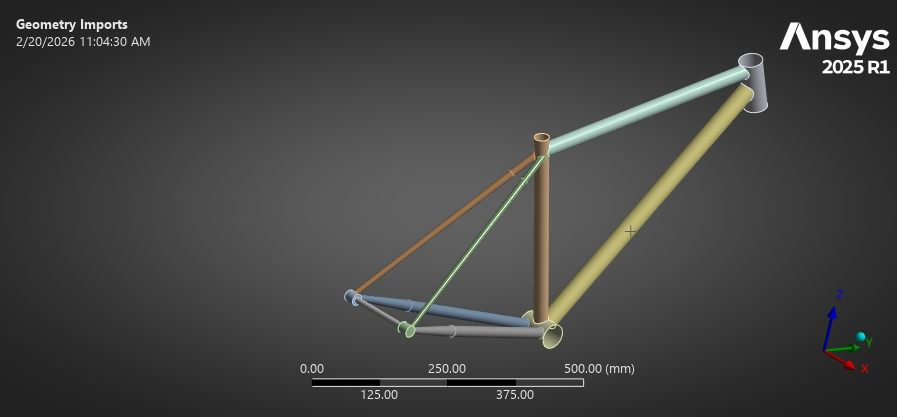

Hi, I'm Sathya! My expertise lies in mechanical design,structural analysis, and design-for-manufacturing (DFM).
I’ve machined drivetrain components for Purdue Electric Racing (Formula SAE) and designed production tooling for rotorcraft at Sikorsky. I absolutely love the full lifecycle of hardware—taking a part all the way from first-principles structural mechanics and optimization, through GD&T and CAM, straight to the machining table and a finished product.
From medevac helicopters to electricvehicles, I’m focused on building things that genuinely help people and the planet.With that said, enjoy peeking at my work!
Programs: CH-53K, Black Hawk, search-and-rescue rotorcraft, Nomad VTOL
Standards: ASME Y14.5 GD&T
Designed & revised 14 production tooling fixtures & jigs (drill jigs, assembly locators, masking fixtures) in CATIA V5 for CH-53K, Black Hawk, & search-and-rescue rotorcraft; 3 now in use on shop floor; 11 in procurement & manufacturing.
Toleranced 12 tools to ASME Y14.5 GD&T, defining datum reference frames and profile/position callouts (±0.001 in. to ±0.015 in.) matched to CNC milling, manual machining, and additive processes.
Traced kinematic underconstraint and lack of sealing in 3 released production tools back to root cause; redesigned geometry to eliminate secondary mill setups and reduce vendor procurement lead time by 2 weeks.
Maintained multi-level BOMs for all 14 tools & routed engineering change orders through SAP ERP & 3DEXPERIENCE PLM, so manufacturing engineers & machinists worked from current tooling data across releases.
Led mechanical design on hybrid propulsion system intern project for rotor-blown Nomad VTOL; packaged ICE, motor generator, battery pack, & a dual motor & planetary gearbox 20% under 80 lb weight limits; presented to leadership.
Validation: Max cornering, acceleration and combined tire contact patch load cases; mesh convergence studies; bearing bore tolerance verification
Material: 7075-T6 aluminum
Executed static structural FEA on the rear upright & hub group targeting SF 1.5; optimized rib topology & fillet radii against localized stress concentrations to reduce suspension bracket compliance from 0.079 in. to under 0.02 in.
Ran static structural FEA on the rear upright and hub group, then reworked stiffener and fillet geometry against the stress peaks and 2 mm deflections it exposed, and pulled dead weight out of near-zero-stress areas.
Resolved stress propagation issues in Ansys via strain-energy study & first principles calculation; identified bonded contacts as an issue & switched to frictionless contacts on specific interfaces for correct stress propagation & deformation.
Ran mesh convergence studies to produce highest fidelity results on max cornering, accel, & combined tire contact patch cases to verify previous studies and geometry modifications.
Enhanced lumped-parameter battery thermal model accuracy by calculating effective thermal conductivities from empirical literature & test datasets, replacing uniform isotropic cell assumptions to increase thermal simulation fidelity.
Detailed 2D production drawings for rear upright assemblies, applying ISO P7 interference limits & ISO H8 transition fit on 3.937 in. & 4.528 in. nominal bearing seats (−0.0009 in. / −0.0022 in. & +0.002 in. / 0 in.) to maintain a press fit for SKF 61818 bearings across operating thermal ranges in 7075-T6 aluminum.
Built a fully parametric frame assembly in Siemens NX keyed to off-the-shelf tubing dimensions, so wheelbase, head angle, chainstay angle, and dropout geometry all update from a single set of driving inputs.
Ran Ansys FEA on each candidate frame, swapping stock tube diameters and wall thicknesses through the parametric model to find the lightest combination that holds a 2.0 minimum safety factor under static load.
Ran cost-versus-performance trade studies on motors, sprockets, and tubing alongside the FEA, converging on the cheapest catalog set that still meets the target safety factor and ride geometry, 9% under the first build cost.
Parametric electric bike frame assembly

Frame model prepared for FEAStress distribution across the frame under static load
Tools: Python particle simulation, feasibility trade study
Scope: PM2.5/PM10 mitigation, Hong Kong
Researched Studio Roosegaarde's Smog Free Tower concept and evaluated its feasibility for large-scale deployment to reduce PM2.5/PM10 air pollution in Hong Kong within realistic budget and practicality constraints.
Built a low-fidelity Python simulation modeling individual particle motion to determine each tower's effective cleaning radius: the area where PM2.5/PM10 concentrations could be held at or below global health standards.
Combined the simulation results with a scale-deployment feasibility analysis to conclude that city-wide deployment wasn't practical: a data-driven recommendation rather than a subjective call.